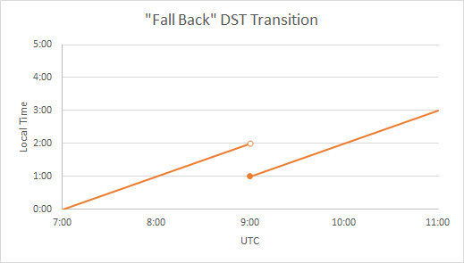
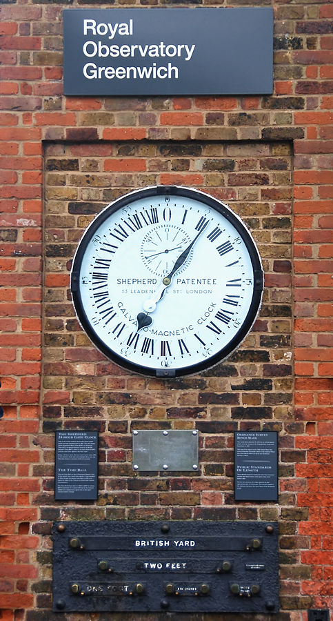

System Development with Python
Week 6 :: datetime, time, pytz
Joseph Sheedy
joseph.sheedy@gmail.com
Git repository: https://github.com/UWPCE-PythonCert/Python300-SystemDevelopmentWithPython-Spring-2014
datetime, time, pytz
What's so hard about representing time?
Humans are mostly accustomed to communicating in their local timezone.
There are hundreds of them, whose definitions change
What happens to your application when it's deployed to a server running in a different timezone?
The length of a day is not constant, and leap seconds have been inserted frequently
Daylight savings time challenges
DST
Daylight savings time creates discontinuities in a time series


On representing a point in time
- There are two major time standards which you should understand:
UTC: Coordinated Universal Time (French: Temps Universel Coordonné)
This is the primary time standard in the world
Provides a consistent reference all other time zones can relate to
No daylight savings time
Also known as Zulu Time, as the UTC time zone is sometimes denoted by the letter Z, e.g. 12:59Z
It is similar to, but not the same as, Greenwich Mean Time (GMT). UTC is more precisely defined

UNIX time
- UNIX time is represented as the number of seconds from one point in time known as the Epoch, defined to be 00:00 UTC January 1, 1970, not counting leap seconds
- Note that UNIX time is based on another time standard
- On 32 bit OSes which store time as a signed 32-bit integer, the largest value that can be stored is 03:14:07 UTC on Tuesday, 19 January 2038. One second afterwards, time overflows back to zero. This is known as the Y2038 problem.
- On 64 bit machines, the largest time which can be represented is in the year 292 billion, at which time our universe is predicted to not exist
timezones and datetime calculations
The rules for time adjustment across the world are more political than rational
from datetime import time, date, datetime
The datetime object represents a specific moment in time
The date object represents a calendar date
The time object represents a time
from datetime import datetime
t = datetime(2019, 11, 1)
date = t.date()
now = datetime.now()
limitations of datetime
- precision is limited to microseconds
- time range is limited:
In [3]: datetime.MINYEAR Out[3]: 1 In [4]: datetime.MAXYEAR Out[4]: 9999 In [5]: datetime.datetime(37337,1,1) --------------------------------------------------------------------------- ValueError Traceback (most recent call last)in () ValueError: year is out of range In [6]: datetime.datetime(0,1,1) --------------------------------------------------------------------------- ValueError Traceback (most recent call last) in () ValueError: year is out of range - If you are on a 32-bit OS and using Python pre-2.6, you will be limited to the year 2038.
datetime -> string
from datetime import datetime
t = datetime.now()
t.isoformat()
t.strftime("Date: %B %d, %Y. Time: %H:%M")
strftime passes format codes to the strftime of the platform's C library. This may not be standardized! A list of format directives is here
getting the current UNIX time :
int(datetime.datetime.now().strftime('%s'))
# in Python 3.3+:
datetime.now().timestamp()
string -> datetime
datetime.strptime(string, format)
In [88]: datetime.datetime.strptime?
Type: builtin_function_or_method
String form:
Docstring: string, format -> new datetime parsed from a string (like time.strptime()).
time_string = "2019/11/1 2300"
format = "%Y/%m/%d %H%M"
datetime.datetime.strptime(time_string, format)
strptime format strings use the same formatting tokens as strftime
If you need to parse arbitrary time strings, or don't want to maintain format strings, there is python-dateutil.parser
two types of datetimes - naive and aware
so far we haven't created any datetime objects with associated timezone information, these are known as 'naive' datetimes
in order to accurately represent a real time, timezone information is required
Some systems may expect naive times to represent UTC, others may decide on local time zone. It's usually safer to be explicit.
Timezone is specified with the tzinfo attribute, through the constructor: datetimes are immutable
Change the timezone or another attribute with the replace(*args, **kwargs) method to create a new object with all the same attributes except those specified
tzinfo is expected to be a subclass of datetime.tzinfo
However, datetime.tzinfo is an abstract base class, which means you'll need to define your own subclass (filled with peril) or install the pytz package
pytz is based on the Olson database, a reference database of the world's timezones.
pytz
A list of all the timezones in pytz is available in pytz.all_timezones
Timezone is often specified as a UTC offset in hours, e.g. 2019-11-1T11:59-08:00. Don't use this offset directly to permanently record a user's timezone because it may change with Daylight Savings Time. Better to obtain the IANA code from the list in pytz and let datetime do the calculations.
from datetime import datetime
import pytz
t1 = datetime(2019,11,1, tzinfo=pytz.UTC)
us_pacific_tz = pytz.timezone('US/Pacific')
t2 = datetime(2019,11,1, tzinfo=us_pacific_tz)
time calculations
datetime.timedelta([days[, seconds[, microseconds[, milliseconds[, minutes[, hours[, weeks]]]]]]]) represents a time difference
All the datetime objects overload the arithmetic operators, such that adding or subtracting dates will return a datetime.timedelta object
In [17]: datetime.datetime.now() - datetime.datetime.now()
Out[17]: datetime.timedelta(-1, 86399, 999987)
adding timedelta to a datetime will result in a new datetime
In [19]: datetime.datetime(2019,11,1, tzinfo=pytz.UTC) + datetime.timedelta(days=1)
Out[19]: datetime.datetime(2019, 11, 2, 0, 0)
# or create a shortcut for creating a UTC timezone aware datetime:
import functools
utc = functools.partial(datetime.datetime, tzinfo=pytz.UTC)
utc(2019,11,1,12,0) + datetime.timedelta(days=1)
time calculations
timedelta has a few functions and properties to retrieve the results: timedelta.total_seconds(), timedelta.days, timedelta.seconds, timedelta.microseconds
datetimes in the calculations must be all naive or all aware
In [35]: datetime.datetime(2019,11,1,tzinfo=pytz.UTC) - datetime.datetime(2019,10,1) --------------------------------------------------------------------------- TypeError Traceback (most recent call last)in () TypeError: can't subtract offset-naive and offset-aware datetimes
Storing datetimes
Try to deal in UTC as much as possible. Do not depend on the machine's interpretation of local time.
For instance, datetime.now() on my Mac will return a naive datetime containing the local time. Alternatively:
# return the current time as an aware datetime in UTC:
datetime.datetime.now(pytz.UTC)
# this will return a naive datetime with the current UTC time
datetime.datetime.utcnow()
When storing a datetime in a database, it will need to be translated into the database's native format. Depending on the database driver, it may or may not accept datetimes. If it does, it may or may not respect the timezone information
Discovering the behavior is part of your database integration work
datetimes in sqlite3
From the sqlite3 docs:
Dates and times in sqlite3 are stored as TEXT, REAL, or INTEGER values
TEXT as ISO8601 strings ("YYYY-MM-DD HH:MM:SS.SSS").
REAL as Julian day numbers, the number of days since noon in Greenwich on November 24, 4714 B.C. according to the proleptic Gregorian calendar.
INTEGER as Unix Time, the number of seconds since 1970-01-01 00:00:00 UTC.
So Python datetime objects must be translated to these types
sqlite3 has support for "adapters" and "converters" to translate types going in and out of the DB
Default adapters and converters are supplied for date and datetime objects
unfortunately, the default implementation does not handle timezone aware datetimes, but they are simply implementable
let's look at examples/datetime_naive_to_sqlite.py and examples/datetime_aware_to_sqlite.py
The End
Questions?
/